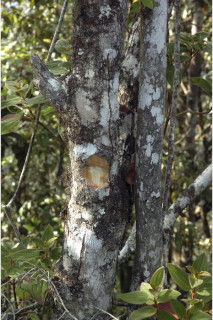
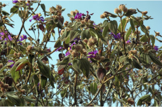
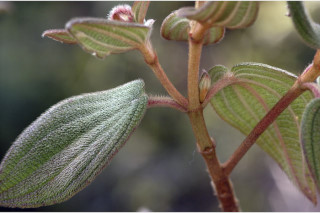
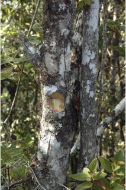
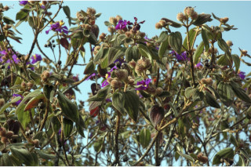
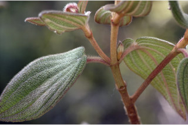
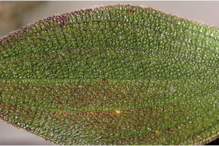
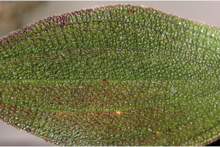

Shrubs ca. 4 m tall.
ಅಂದಾಜು 4 ಮೀಎತ್ತರದ ಪೊದೆಗಳು.
Shrubs ca. 4 m tall.
பெரிய குத்துச்செடி 4 மீ. உயரம் வரை வளரக்கூடியது.
Branchlets quadrangular with ferruginous hairs.
ಕಿರುಕೊಂಬೆಗಳು 4-ಕೋನಗಳನ್ನು ಹೊಂದಿದ್ದು ತುಕ್ಕು ಬಣ್ಣ ಸಮೇತವಾಗಿರುತ್ತವೆ.
Branchlets quadrangular with ferruginous hairs.
சிறிய நுனிக்கிளைகள் குறுக்குவெட்டுத் தோற்றத்தில் நான்கு கோணங்களுடையது, உரோமங்களுடையது.
Leaves simple, opposite, decussate; petiole 1 cm long, planoconvex in cross section, ferruginous hairy; lamina 5-8 x 2.5-4.5 cm, ovate, apex acute, base obtuse to subcordate, margin entire, coriaceous, dark green above, paler beneath, densely tawny - bristly on both upper and lower surfaces; midrib canaliculate above; 5-7 nerved at base.
ಎಲೆಗಳು ಸರಳವಾಗಿದ್ದು ಕತ್ತರಿಯಾಕಾರದ ಅಭಿಮುಖ ಜೋಡನಾ ವ್ಯವಸ್ಥೆಯಲ್ಲಿರುತ್ತವೆ; ಎಲೆತೊಟ್ಟು 1 ಸೆಂ.ಮೀ.ಉದ್ದವಿದ್ದು ಅಡ್ಡಸೀಳಿದಾಗ ಸಪಾಟಪೀನ ಮಧ್ಯದ ಆಕಾರದಲ್ಲಿರುತ್ತದೆ ಹಾಗೂ ತುಕ್ಕು ಬಣ್ಣದ ರೋಮಸಹಿತವಾಗಿರುತ್ತದೆ; ಪತ್ರಗಳು 5-8X 2.5-4.5 ಸೆಂ.ಮೀ. ಗಾತ್ರ, ಅಂಡದ ಆಕಾರ,ಚೂಪಾದ ತುದಿ,ಚೂಪಲ್ಲದುದರಿಂದ ಉಪ-ಹೃದಯಾಕಾರದ ಬುಡ,ನಯವಾದ ಅಂಚು,ಚರ್ಮದಂತಹ ಮೇಲ್ಮೈ,ಕಡು ಹಸಿರು ಬಣ್ಣದ ಮೇಲ್ಭಾಗ,ತೆಳು ಬಣ್ಣದ ತಳಭಾಗ ಹೊಂದಿರುತ್ತವೆ, ಮೇಲ್ಭಾಗ ಮತ್ತು ತಳಭಾಗ ಕಂದು ಮಿಶ್ರಿತ ಹಳದಿ ಬಣ್ಣದ ಬಿರುಗೂದಲುಗಳಿಂದ ದಟ್ಟವಾಗಿ ಆವರಿಸಿರುತ್ತದೆ;ಮಧ್ಯನಾಳ ಪತ್ರದ ಮೇಲ್ಭಾಗದಲ್ಲಿ ಕಾಲುವೆ ಗೆರೆ ಸಮೇತವಿರುತ್ತದೆ; ಪತ್ರದ ಬುಡದಲ್ಲಿ 5-7 ನಾಳಗಳು ಇರುತ್ತವೆ.
Leaves simple, opposite, decussate; petiole 1 cm long, planoconvex in cross section, ferruginous hairy; lamina 5-8 x 2.5-4.5 cm, ovate, apex acute, base obtuse to subcordate, margin entire, coriaceous, dark green above, paler beneath, densely tawny - bristly on both upper and lower surfaces; midrib canaliculate above; 5-7 nerved at base.
இலைகள் தனித்தவை, எதிரடுக்கமானவை, குறுக்குமறுக்கானவை; இலைக்காம்பு 1 செ.மீ. நீளமானது, இலைக்காம்பு குறுக்குவெட்டுத் தோற்றத்தில் பிளேனோகான்வக்ஸ், உரோமங்களுடையது; இலை அலகு 5-8 X 2.5-4.5 செ.மீ., முட்டை வடிவானது, அலகின் நுனி கூரியது, அலகின் தளம் மெட்டையானது முதல் சிறிய இதய வடிவானது, அலகின் விளிம்பு முழுமையானது, கோரியேசியஸ், அலகின் மேற்பரப்பு கரும்பச்சை நிறம், கீழ்பரப்பு வெளிறிய நிறமானது, மேற்பரப்பு மற்றும் கீழ்பரப்பு உரோமங்களுடையது; மையநரம்பு மேற்புறத்தில் அலகின் பரப்பைவிட பள்ளமானது; 5-7 நரம்புகளை தளத்திலே உடையது.
Inflorescence terminal, 4-6 flowered; flowers purple; hypanthium urceolate, 1.5 x 1.4 cm, with tufts of wooly bristles.
ಪುಷ್ಪಮಂಜರಿ ತುದಿಯಲ್ಲಿದ್ದು 4 ರಿಂದ 6 ಹೂಗಳನ್ನು ಹೊಂದಿರುತ್ತದೆ;ಹೂಗಳು ಕೆನ್ನೀಲಿ ಬಣ್ಣ ಹೊಂದಿರುತ್ತವೆ;ವಿಕಸಿತ ಪುಷ್ಪಪೀಠ ಹೂಜಿಯಾಕಾರ ಹೊಂದಿದ್ದು,1.5 X 1.4 ಸೆಂ.ಮೀ. ಗಾತ್ರ ಹೊಂದಿದ್ದು ಉಣ್ಣೆಯಂತಹ ಬಿರುಗೂದಲುಗಳ ಕುಚ್ಚುಗಳನ್ನು ಹೊಂದಿರುತ್ತವೆ.
Inflorescence terminal, 4-6 flowered; flowers purple; hypanthium urceolate, 1.5 x 1.4 cm, with tufts of wooly bristles.
மஞ்சரி தண்டின் நுனியில் காணப்படும் , 4-6 மலர்களுடையது; மலர்கள் பர்புள் நிறமானது; ஹைபான்தியம் அர்சியேலேட், 1.5 x 1.4 செ.மீ., உரோமங்களுடையது.
Capsule urceolate; seeds numerous.
ಸಂಪುಟ ಫಲಗಳು ಹೂಜಿಯಾಕಾರದಲ್ಲಿದ್ದು ಹಲವಾರು ಬೀಜಗಳನ್ನೊಳಗೊಂಡಿರುತ್ತವೆ.
Capsule urceolate; seeds numerous.
வெடிகனி (கேப்சியூல்) அர்சியேலேட்; விதைகள் எண்ணற்றவை.


 






 
